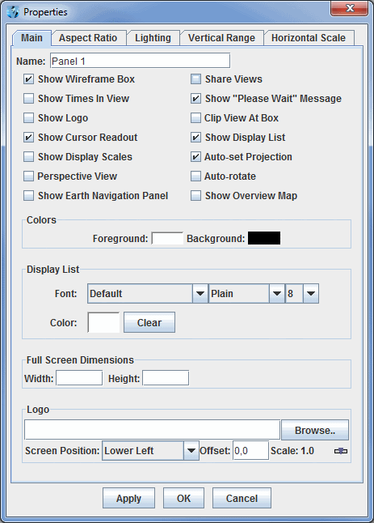
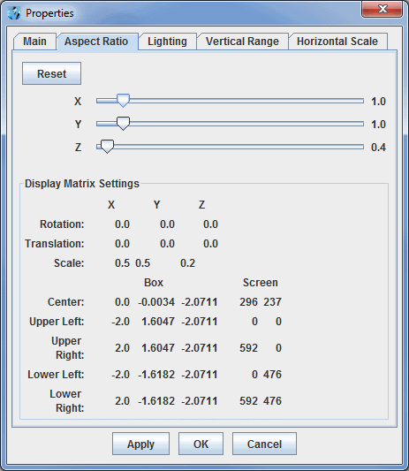
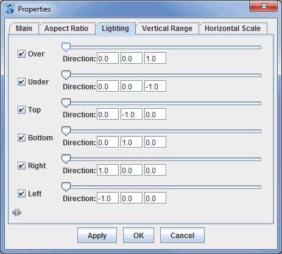
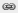
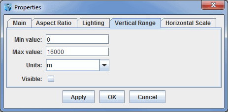
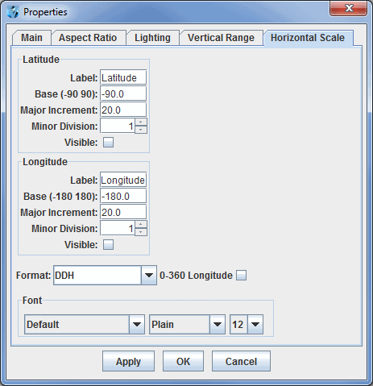
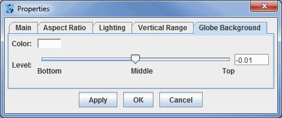

Properties Dialog
Accessed through the View->Properties menu item in the Main Display window, this Properties dialog allows for controlling many aesthetic aspects of the display. The Properties dialog window is composed of five tabs: Main, Aspect Ratio, Lighting, Vertical Scale, and Horizontal Scale. If working with a globe display, there is no Horizontal Scale tab, but there is an additional tab for Globe Background.
The Main tab of the Properties dialog allows for changing several general settings pertaining to the display. Many of the items in this tab can also be found in the Display Window tab of the User Preferences window.

Image 1: Main Tab of the Properties Dialog
Properties
- Name - Sets the name of the panel. This name will be centered between the Projections menu and the Time Animation Widget.
- Show Wireframe Box - Toggles the visibility of a 3D wireframe box around the data. This box helps provide orientation in 3D views.
- Share Views - Controls whether sharing is turned on or off for the display. If sharing is turned on, then the viewpoint and projection changes are shared with any other displays that also have have sharing turned on.
- Show Times In View - Turns on the label shown inside the Main Display window that shows the current animation time and step in the loop.
- Show "Please Wait" Message - Displays a "Please Wait" message in the bottom toolbar of the Main Display window when McIDAS-V is in the middle of a process.
- Show Logo - Adds a logo to the Main Display window. The logo is set at the bottom of this dialog.
- Show Top Bar - Sets the visibility of the Display Menus bar at the top of the panel in the Main Display window. This includes the Time Animation Widget.
- Clip View At Box - Allows the user to omit from view all display elements outside of the wireframe box. This is helpful to remove map lines outside the area of data.
- Show Cursor Readout - Displays a label of latitude, longitude, and altitude at the cursor position over the display, shown in the lower border of the Main Display window without having to probe the data.
- Show Display List - Shows a listing of the names and times of the displays in the Main Display window.
- Show Display Scales - Adds vertical and horizontal scales to the wireframe box in the Main Display window.
- Auto-set Projection - Changes the projection to match the native projection of the newest data source added. When checked off, the current map projection will remain unchanged for any additional data source added to the display. This may be desirable when a user has set up a view of a particular area and wants to retain it when displaying new data.
- Perspective View - Provides an alternate 3D view of the display. This sets the 'set parallel/perspective projection' option in the Viewpoint Toolbar of the Main Display window.
- Auto-rotate - Turns on/off an automatic rotation of the display.
- Show Earth Navigation Panel - Shows an Earth Navigation panel at the bottom of the Main Display window.
- Show Overview Map - Adds an overview map to the Legend, showing the area currently displayed in the Main Display window.
- Enable Adaptive Resolution - Turns on/off adaptive resolution for the display. When this option is turned on, layers added to the panel will use adaptive resolution by default if it is valid for the layer.
- Show Globe Background - Turns on/off the globe background. Turning this option on makes a
globe background by filling a solid color on the surface of the globe; off removes the background by making it 100% transparent.
This option is present only with Globe Displays.
- Colors - Sets the background and foreground colors of the display (not the map lines).
- Display List - Controls how the list of the layers listed at the bottom of the Main Display window will be written. There are options to modify the font, style, size, and color of the text.
- Full Screen Dimensions -
- Width - Sets the width of the display when in full screen mode. Set this value to 0 or leave blank for the standard full screen display.
- Height - Sets the height of the display when in full screen mode. Set this value to 0 or leave it blank for the standard full screen display.
- Logo -
- Screen Position - Sets the location of the logo in the Main Display window. The options are Lower Left, Upper Left, Upper Right, Lower Right, and Center.
- Offset - Adds an offset of the logo from the screen position selected. This is in the format of (X,Y).
- Scale - Scales the size of the logo in the Main Display window. Use the slider to change this value. A value of 1.0 uses the full size for the image, values below 1.0 make the image smaller, and values greater than 1.0 make the image larger.
The Aspect Ratio tab of the Properties dialog allows for changing the aspect ratio of the display with respect to the X, Y, and Z directions. X, Y, and Z values can be changed by using the slider. Any changes will be made to the display with Apply or OK. The Display Matrix Settings panel will actively update as the X, Y, and Z values are changed, and as rotation or zooming is applied to the Main Display window.

Image 2: Aspect Ratio Tab of the Properties Dialog
Properties
- - Resets the X, Y, and Z values back to the last values applied to the image. If Apply has not been selected, then the values will return to default.
- X - Stretches the display along the X-axis. The higher the value, the more stretched in the east-west direction the display will be. The default value for this is 1.0.
- Y- Stretches the display along the Y-axis. The higher the value, the more stretched in the north-south direction the display will be. The default value for this is 1.0.
- Z - Stretches the display along the Z-axis. The higher the value, the more stretched in the vertical the display will be. The default value for this is 0.4.
- Display Matrix Settings - Displays information pertaining to the rotation, translation, and scale of the X, Y, and Z axes. This also displays numerical values pertaining to boundaries of the Main Display window and also the wireframe box. These values will actively update as the X, Y, and Z values are changed, and as rotation or zooming is applied to the Main Display window.
The Lighting tab of the Properties dialog allows for adding the effect of light shining on the display from different angles along the X, Y, and Z axes. The default values are listed in the image below.

Image 3: Lighting Tab of the Properties Dialog
Properties
- Left Column - Denotes the direction that the light will be shining from. Uncheck the checkboxes in order to not add lighting for specific directions.
- Slider - Controls the intensity of the light. When the slider is on the far left, there is no light, and the brightness increases as the slider is moved to the right.
- Direction - Sets the direction that the light will be coming from. The first box is from the X direction, with positive values aiming the light right along the X-axis. The second box is from the Y direction, with positive values aiming up along the Y-axis. The third box is from the Z direction, with positive values aiming up along the Z-axis.
- - When this is button is seen, all of the components in this tab are controlled individually. This means that a change to one item (ex. Over), will not effect any of the other items in this tab. When this button is clicked, the image will change to . When this image is seen, the components are linked together. Therefore, any change to the visibility checkboxes or the slider for brightness will be shared between all components of this tab.
The Vertical Scale tab of the Properties dialog allows for changing the vertical scale used for the Z-axis of the display in the Main Display window.

Image 4: Vertical Scale Tab of the Properties Dialog
Properties
- Min value - Sets the minimum vertical value to use for the Z-axis in the Main Display window. The default value for this is 0.
- Max value - Sets the maximum vertical value to use for the Z-axis in the Main Display window. The default value for this is 16,000.
- Axis Label - Sets the label of the vertical axis in the Main Display window. The default for this is 'Altitude'.
- Units - Sets the units used for the vertical scale in the Main Display window. The default value for this is 'm' for meters.
- Major Increment - Sets the spacing of the labels on the vertical axis.
- Minor Division - Sets the number of minor divisions, denoted by small tick marks, between
the Major Increment tick marks. The default value is 1, meaning that there is one division between
major increment tick marks, so there will be no small tick marks between them. A value of 2 will place one small tick mark between
the major increment tick marks, a value of 3 will place two small tick marks between the major increment tick marks, etc..
- Visible - Sets the vertical scale labels along the wireframe box as visible.
The Horizontal Scale tab of the Properties dialog allows for setting the visibility and properties of the latitude/longitude labels along the outside of the wireframe box.

Image 5: Horizontal Scale Tab of the Properties Dialog
Properties
- Label - Sets the label along the latitude/longitude axes. The default values are "Latitude" and "Longitude".
- Base - Sets the lowest numerical value of latitude/longitude that will be plotted.
- Major Increment - Sets the spacing in degrees of the labels along the latitude/longitude axes. There are also large tick marks drawn along the wireframe box at this increment.
- Minor Division - Sets the number of minor divisions, denoted by small tick marks, between
the Major Increment tick marks. The default value for both Latitude and Longitude is 1, meaning that there is one division between
major increment tick marks, so there will be no small tick marks between them. A value of 2 will place one small tick mark between
the major increment tick marks, a value of 3 will place two small tick marks between the major increment tick marks, etc..
- Visible - Sets the latitude/longitude labels along the wireframe box as visible.
- Axis label relief - Sets how the text will be oriented with respect to the x-axis of the display. When this option is turned off, the labels will be parallel to the x-axis and thus display flat. When this option is turned on, the labels will be rotated slightly about the x-axis to make the text more visible when the display is rotated.
- Format - Sets the format of the latitude/longitude Major Increment labels.
You can change the structure of the labeling to show degrees out to various decimal values, latitude/longitude labels in DMS
(Degrees, Minutes, Seconds) format, and include a label for hemisphere (N, S, E, W) by choosing a Format value with an H at the end.
- 0-360 Longitude - Uses a 0-360 degree range for the labeling of the Longitude's Major Increment. The default is to have this checkbox turned off, which uses a -180-180 degree range.
- Font - Sets the Font, Style, and Size of both the Major Increment labels for latitude and longitude, as well as the Labels.
The Globe Background tab of the Properties dialog allows for setting the color and the vertical positioning of the globe background. Note that you must have the Show Globe Background option in the Main tab of the Properties dialog selected to use the globe background. This tab is only available if using a Globe Display.

Image 6: Globe Background Tab of the Properties Dialog
Properties
- Color - Sets the color of the globe background.
- Level - Sets the vertical positioning of the globe background. The default value is -0.01 so it is just below the surface of the earth, making map lines visible. Change this value by using the slider or by entering a value into the field and pressing Enter.